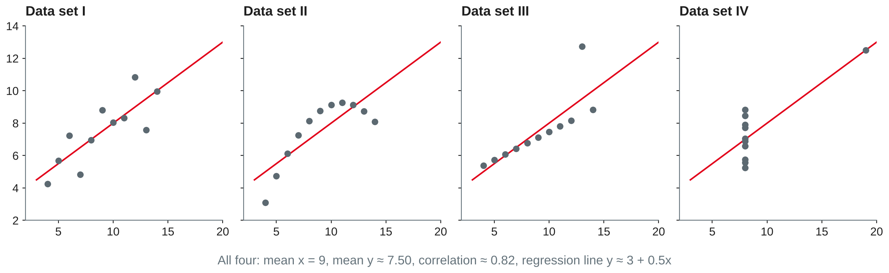
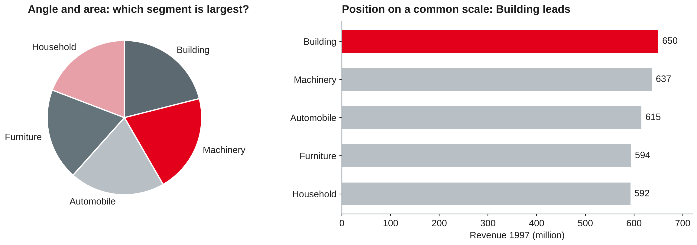
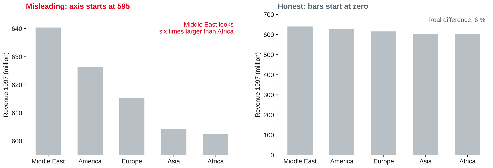
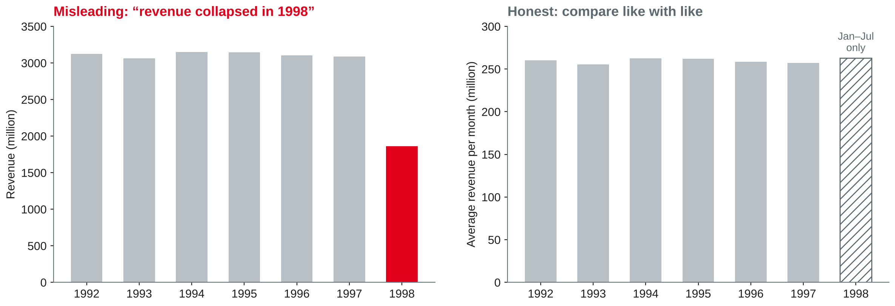

Data Analytics
Chart choice · perception and visual encoding · misleading charts · storytelling with data · KPI design
DHBW Mannheim · Data Science and Artificial Intelligence · Semester 5
Your examples: which chart did you bring — and is it good or misleading? Why?
Start from the question, not from the chart menu

Own illustration of the data published by Anscombe (1973).
Exploratory analysis
Explanatory analysis
Before designing an explanatory chart, answer: who is the audience, what should they know or do, and how will data support it?
Knaflic (2015, Chapter 1).
| Question | Typical chart | Avoid |
|---|---|---|
| Compare categories | Bar chart, sorted; horizontal for long labels | Pie with many slices, 3D bars |
| Change over time | Line chart; bars for few periods | Unequal time steps on an even axis |
| Part of a whole | Stacked or 100 % bar; pie only for 2–3 parts | Pie with similar slices |
| Distribution | Histogram, box plot | Average only |
| Relationship | Scatter plot | Two lines on two y-axes |
| Look up exact values | Table, heatmap | Chart with 50 data labels |
Own compilation based on Knaflic (2015, Chapter 2) and Munzner (2014).
For each result from the TPC-H warehouse, choose a chart and say why.
How the eye reads a chart
Munzner (2014, Chapter 5).
Ranking of elementary perceptual tasks, from most to least accurate:
Based on Cleveland and McGill (1984).

Own illustration with TPC-H data (Transaction Processing Performance Council, n.d.), based on Cleveland and McGill (1984).
Knaflic (2015, Chapter 4); Munzner (2014, Chapter 10).
Decluttering is not minimalism for its own sake: every element that stays must help the reader.
Tufte (2001); Knaflic (2015, Chapter 3).
When the picture says more than the data

Own illustration with TPC-H data (Transaction Processing Performance Council, n.d.), based on Tufte (2001).

Own illustration with TPC-H data (Transaction Processing Performance Council, n.d.).
| Technique | Why it misleads | Honest alternative |
|---|---|---|
| Dual y-axes | Scales are arbitrary, so any two lines can be made to "move together" | Two aligned charts, or index both series (e.g. 2020 = 100) |
| 3D charts | Perspective distorts angles, areas and heights | 2D chart |
| Area or icon scaling | Doubling width and height quadruples the area | Scale length only, or use bars |
| Cherry-picked time window | A short window can turn a flat trend into growth | Show the full period, mark the selection |
| Missing denominator | Totals grow with population or customers | Rates per customer, per capita, per month |
Own compilation based on Tufte (2001) and Knaflic (2015).
What is misleading, and how would you fix it?
From chart to message to decision
Use action titles: "Revenue is flat across all regions — 1998 only looks lower because it is incomplete" instead of "Revenue by year".
Knaflic (2015).
A key performance indicator is only useful if it is clearly defined and connected to a decision.
Based on Parmenter (2015) and Baars and Kemper (2021).
| Field | Example: net revenue |
|---|---|
| Formula | sum(l_extendedprice * (1 - l_discount)) |
| Source and grain | fact_sales, one row per order line |
| Time reference | Order date (not ship date) |
| Filters | Only complete months |
| Comparison | Same period previous year |
| Owner, frequency | Head of sales, monthly |
Own example with TPC-H data (Transaction Processing Performance Council, n.d.), based on Parmenter (2015).
matplotlib on the star schema from session 3
import duckdb, matplotlib.pyplot as plt
con = duckdb.connect("tpch.duckdb")
df = con.sql("""
SELECT region, sum(revenue) / 1e6 AS revenue_m
FROM fact_sales JOIN dim_customer USING (customer_key)
JOIN dim_date USING (date_key)
WHERE year = 1997 GROUP BY region ORDER BY revenue_m
""").df()
fig, ax = plt.subplots(figsize=(8, 4))
ax.barh(df["region"], df["revenue_m"], color="#B8C0C5")
ax.set_xlabel("Revenue 1997 (million)")
ax.set_title("Revenue 1997 is almost equal across regions", loc="left")
ax.spines[["top", "right"]].set_visible(False)Work in pairs. Put each chart with a two-sentence interpretation in your notebook.
Preparation: keep your charts from today — they become the first tiles of your dashboard. Check that streamlit hello runs on your laptop.